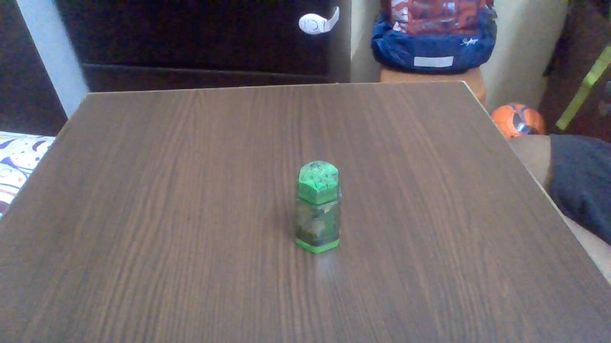

Test Image - 1
Output on Microsoft Azure -
Computer mouse
Output on MobileNet Model -
mouse
Test Image - 2.jpg)
Output on Microsoft Azure -
Ball
Output on MobileNet Model -
Tennis Ball
Test Image - 3
Output on Microsoft Azure -
Remote
Output on MobileNet Model -
Television remote
Test Image - 4
Output on Microsoft Azure -
Smart phone
Output on MobileNet Model -
phone
Test Image - 5
Output on Microsoft Azure -
Glass container
Output on MobileNet Model -
container
Test Image - 6
Output on Microsoft Azure -
Earphone
Output on MobileNet Model -
Wireless Earphone
Test Image - 7.jpg)
Output on Microsoft Azure -
bottle
Output on MobileNet Model -
Plastic bottle
Test Image - 8
Output on Microsoft Azure -
Eraser
Output on MobileNet Model -
Sharpner and eraser
Test Image - 9
Output on Microsoft Azure -
bubble gum
Output on MobileNet Model -
candy
Result -
I have tested 9 images.
Mobile net has predicted 5 of them correctly while Microsoft Azure has predicted 4 of them correctly
Thus, Mobile net is more accurate